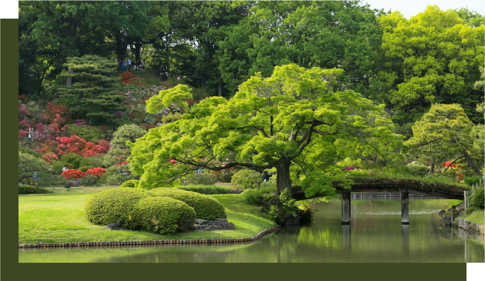
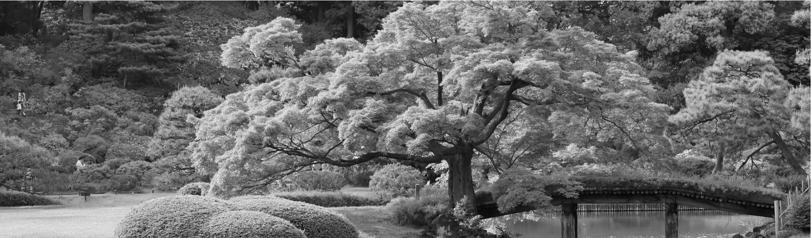

__________
'정원', 이 단어를 들었을 때 어떤 이미지가 떠오르시나요? 초록빛 들판, 꽃들로 가득 찬 마당, 혹은 독특한 도형의 정원일 수도 있겠네요.
많은 모습들이 떠오를 수 있겠지만, 저에게 정원은 선선한 바람이 부는 푸른 들판을 가장 먼저 떠올리게 합니다.
꽃도, 나무도 없는 들판이요. 하지만 저는 그 들판이 부족하다고 느끼지 않아요. 아무것도 없는 들판이라도, 바람과 벌, 새들에 의해 언젠가 가장 아름다운 모습으로 피어나리라 믿기 때문이에요.

A meditative forest
저 자신도 그런 들판과 닮았다고 생각합니다. 지금은 아직 비어 있는 들판 같지만, 언젠가는 저만의 꽃과 나무로 가득 찬 멋진 정원이 될 거예요.
아직 많은 것을 이루진 못했지만, 앞으로 그 누구보다 멋지고 즐거운 일들을 만들어갈 예정입니다.
이곳에서는 제가 그 정원을 만들어가는 과정을 담아 보여드리려고 합니다. 저의 작업물들이 하나씩 피어나며 만들어질 저만의 정원, 함께 지켜봐 주세요.
